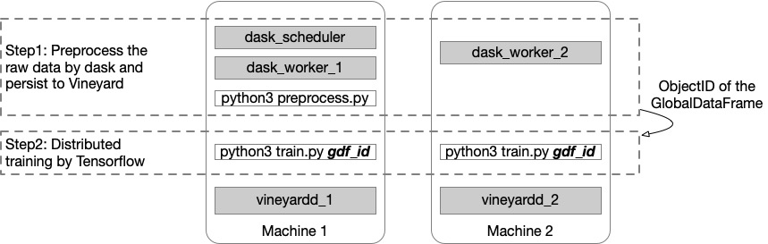

Dask on Vineyard
The integration with Dask allows dask.array and dask.dataframe to be persisted on and loaded from Vineyard. In the following, we first demonstrate that, with Vineyard, it is much easier to implement the example that employs dask for data preprocessing and tensorflow for distributed learning, which was previously shown in the blog.
The Deployment
As shown in the figure above, we only use two machines for the distributed tasks as the purpose of demonstration. The vineyard damon processes are launched on both machines, so as the dask workers. The dask scheduler is launched in the first machine, and we also run the dask preprocess program here in the first step, since the dask scheduler handles the distribution of computation tasks among its workers.
Then in the second step, we will run the training program on both machines with different TF_CONFIG. For the detail of how to set up the config, please refer to documentation.
Preprocessing in Dask
In this step, we load the mnist data and duplicate it to simulate the parallel processing as same as the blog.
from vineyard.core.builder import builder_context
from vineyard.contrib.dask.dask import register_dask_types
def dask_preprocess(dask_scheduler):
def get_mnist():
(x_train, y_train), _ = tf.keras.datasets.mnist.load_data()
# The `x` arrays are in uint8 and have values in the [0, 255] range.
# You need to convert them to float64 with values in the [0, 1] range.
x_train = x_train / np.float64(255)
y_train = y_train.astype(np.int64)
return pd.DataFrame({'x': list(x_train), 'y': y_train})
with builder_context() as builder:
# register the builder for dask.dataframe to the builder_context
register_dask_builder(builder, None)
datasets = [delayed(get_mnist)() for i in range(20)]
dfs = [dd.from_delayed(ds) for ds in datasets]
gdf = dd.concat(dfs)
gdf_id = vineyard.connect().put(gdf, dask_scheduler=dask_scheduler)
return gdf_id
Here the returned gdf_id is the ObjectID of a vineyard::GlobalDataFrame which consists of 20 partitions (10 partitions on each machine).
Training in Tensorflow
In this step, we use the preprocessed data gdf_id to train a model distributedly in keras of Tensorflow.
from vineyard.contrib.ml.tensorflow import register_tf_types
from vineyard.core.resolver import resolver_context
def mnist_dataset(gdf_id, batch_size):
with resolver_context() as resolver:
# register the resolver for tensorflow Dataset to the resolver_context
register_tf_types(None, resolver)
train_datasets = vineyard.connect().get(gdf_id, data='x', label='y')
train_datasets = train_datasets.repeat().batch(batch_size)
options = tf.data.Options()
options.experimental_distribute.auto_shard_policy = tf.data.experimental.AutoShardPolicy.OFF
train_datasets_no_auto_shard = train_datasets.with_options(options)
return train_datasets_no_auto_shard
def build_and_compile_cnn_model():
model = tf.keras.Sequential([
tf.keras.layers.InputLayer(input_shape=(28, 28)),
tf.keras.layers.Reshape(target_shape=(28, 28, 1)),
tf.keras.layers.Conv2D(32, 3, activation='relu'),
tf.keras.layers.Flatten(),
tf.keras.layers.Dense(128, activation='relu'),
tf.keras.layers.Dense(10)
])
model.compile(
loss=tf.keras.losses.SparseCategoricalCrossentropy(from_logits=True),
optimizer=tf.keras.optimizers.SGD(learning_rate=0.001),
metrics=['accuracy'])
return model
def train(gdf_id):
per_worker_batch_size = 64
strategy = tf.distribute.MultiWorkerMirroredStrategy()
train_dataset = mnist_dataset(gdf_id, per_worker_batch_size)
with strategy.scope():
multi_worker_model = mnist.build_and_compile_cnn_model()
multi_worker_model.fit(train_dataset, epochs=3, steps_per_epoch=70)
To use the preprocessed data, we register the resolvers that can resolve a vineyard::GlobalDataFrame distributedly by mulitple workers to the resolver_context. Then we can get the tf.data.Dataset directly from vineyard by the get method. Note that we should specify the column names for the data and label which were set in the last step.
Transfer Learning
After the simple example above, now we demonstrate how the dask-vineyard integration can be leveraged in transfer learning. In a nutshell, transfer learning takes a pre-trained deep learning model to compute features for downstream models. Moreover, it’s better to persist the features in memory, so that the fine-tuning of the downstream models will neither recompute the features nor incur too much I/O costs to read the features from disk again and again. In the following, we refer to the featurization example. We load the tf_flowers data as a dask.array; then use the pre-trained ResNet50 model to generate the features; and finally save them in Vineyard. The global tensor in Vineyard will consists of 8 partitions, each with 400 data slots.
def get_images(idx, num):
paths = list(Path("flower_photos").rglob("*.jpg"))[idx::num]
data = []
for p in paths:
with open(p,'rb') as f:
img = Image.open(io.BytesIO(f.read())).resize([224, 224])
arr = preprocess_input(img_to_array(img))
data.append(arr)
return np.array(data)
def featurize(v, block_id=None):
model = ResNet50(include_top=False)
preds = model.predict(np.stack(v))
return preds.reshape(400, 100352)
imgs = [da.from_delayed(delayed(get_images)(i,8), shape=(400, 244, 244, 3), dtype='float') for i in range(8)]
imgs = da.concatenate(imgs, axis=0)
res = imgs.map_blocks(featurize, chunks=(400,100352), drop_axis=[2,3], dtype=float)
global_tensor_id = vineyard.connect().put(res, dask_scheduler=dask_scheduler)